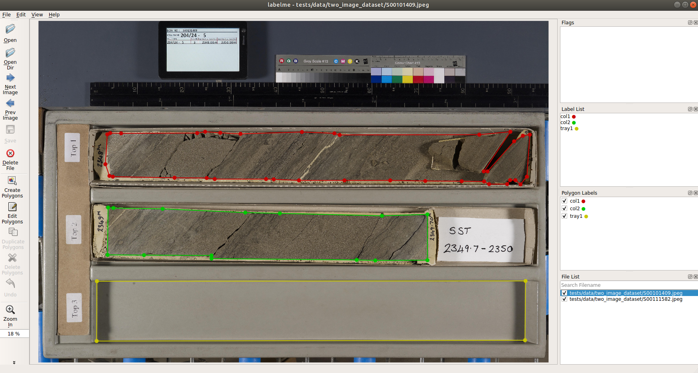

Creating Datasets¶
Using labelme¶
The recommended way to add a new set of labeled training images is to annotate them using wkentaro/labelme. The labelme GUI allows the user to draw any number of labeled polygons on an image, and saves the labels and coordinates in a JSON annotation file.
You can easily install labelme with pip, and then open our small test dataset:
$ pip install labelme
$ labelme tests/data/two_image_dataset
This should open a window that looks like this:

New polygons can be drawn by clicking Create Polygons and then clicking points on the image to add vertices. When you get back around to the starting vertex to close the loop of points and create a polygon, labelme will ask you to assign it a text label.
Unique text labels are aggregated on the right side, and the individual polygons shown in the image are colored and listed with their assigned labels. They happen to be the same in this example, but there could be more labels in the Label List than polygons in the Polygon Labels list for any given image in the directory.
When you finish adding polygons, click the Save button to export the annotations as a .json file, which by default will save to the current directory.
The File List shows images in the currently directory, with the checkbox indicating whether an annotation has been saved for that file yet. You can use the Next Image and Previous Image buttons to traverse through the images (and corresponding annotations) in the directory.
Inspect Our Annotations¶
For a more hands-on exploration of annotation structure and the Dataset API, see notebooks/inspect_dataset.py
How to Name Things¶
As you can see above, our text labels for individual objects have the form <class><number>. The class refers to a general object type, the number differentiates between individual instances of that class within an image. This isn’t the only possible naming scheme, but it’s the one you should use if you want your annotations to be compatible with our PolygonDataset implementation.
In our data, we use two classes, col and tray, to label two different types of objects:
col is for columns of core material – the individual objects that we want to segment, crop, and stack on top of each other.
tray is for empty trays, which for our data are the most reliable “measuring stick” to use for defining the “top” and “base” positions of columns within an image
The first type of object is required – the whole purpose of this workflow is to segment core columns, so you will need to at least label those.
The second type of object is optional – using another object (empty tray, measuring stick, etc.) to define top and base positions of columns is one option for the endpts setting in Layout Parameters, but there are others which do not require the existence of any objects other than core columns.
If you’re making your own dataset, your class names can be whatever you want them to be. You just need at least some name for core columns, and to keep general consistency between:
The
PolygonDataset(s) you train your model with, which use the annotations you saved.The
kwargsyou provide when instantiating aCoreSegmenter. Namely:The
classesargument (it should be the same as forPolygonDataset)The
col_class(and possiblyendpts) fields of thelayout_params
If you decide to use different class names (or layout parameters), we’d recommend changing the CLASSES and LAYOUT_PARAMS in defaults.py so that you don’t have to specify them as often.
Removing imageData¶
labelme saves a field called imageData which encodes the entire image as a string, consuming quite a bit of unnecessary memory. Our PolygonDataset class doesn’t make use of this field, and we’ve provided a script to delete it from all JSON files below a root path:
$ python scripts/prune_imageData.py <path>
Summary of Guidelines¶
To be able to use the built-in corebreakout.datasets.PolygonDataset class with your training data, you want to adhere to these guidelines:
Save
<fname>.jsonannotations in a flat directory with corresponding<fname>.jpegfiles (this islabelme’s default behavior)You may label any number of classes. You will have to supply a list of these classes to the
PolygonDatasetandCoreSegmenterconstructors, or modifydefaults.CLASSES.At a minimum, you will want some class name to represent columns of core. We call ours
'col', but it doesn’t matter what you want to call it if you’re using your own data.You may also create a class (e.g.,
'tray') for any objects that consistently demarcate the top and base positions of core columns better than the columns themselves.
Different instances of the same class should begin with the class name and be differentiated afterward (e.g.,
col1, col2, col3)The corollary is that no class name can be a substring of any other class name (e.g.,
col, col_traywould not be allowed)Multiple polygons may belong to a single instance (for example, if there’s a large gap in the middle of a column)
After annotating images, split into sibling
'train'and'test'subdirectories
Note: We’ve found that the point of diminishing returns happens somewhere in the range of 20-30 training images, which probably corresponds to 30-50 column instances for this dataset. YMMV.
After compiling the annotations, you may wish to modify defaults.DATASET_DIR to avoid need to explicitly specify the data location.
corebreakout.datasets.PolygonDataset¶
This is a subclass of mrcnn.utils.Dataset for instance segmentation
annotations in the default JSON format of
wkentaro/labelme.
Usage¶
from corebreakout.datasets import PolygonDataset
data_dir = defaults.DEFAULT_DATA_DIR # parent of any separate annotation data directories
subset = 'train' # which subdirectory to read from
dataset = PolygonDataset(classes=defaults.DEFAULT_CLASSES)
# Collect all of the requied ID + path information
dataset.collect_annotated_images(data_dir, subset)
# Set all of the attrs required for use
dataset.prepare()
print(dataset)
Two Dataset objects (train, test) are required in calls to model.train(...), which is why we split them into separate directories.
Subclassing mrcnn.utils.Dataset¶
If you want to use a different annotation format, you can inherit from
the base mrcnn.utils.Dataset class.
You will need to write some user-called method to collect file information:
e.g.,
collect_annotated_images(data_dir, subset): Registerimage_id,path, andann_pathfor each (image, annotation) file pair in<data_dir>/<subset>directory.
And then override at least these two methods:
load_mask(image_id): Given animage_id, load (and compute, if necessary) the corresponding mask. For an withNobjects (not including the background), the return value from this function should be(mask, class_ids), wheremaskis boolean array of shape(H,W,N)andclass_idsis a 1D integer array of sizeNwith oneclass_idfor each channel inmask.image_reference(image_id): Return the path of an image, a link to it, or some other unique property to help in looking it up or debugging it.